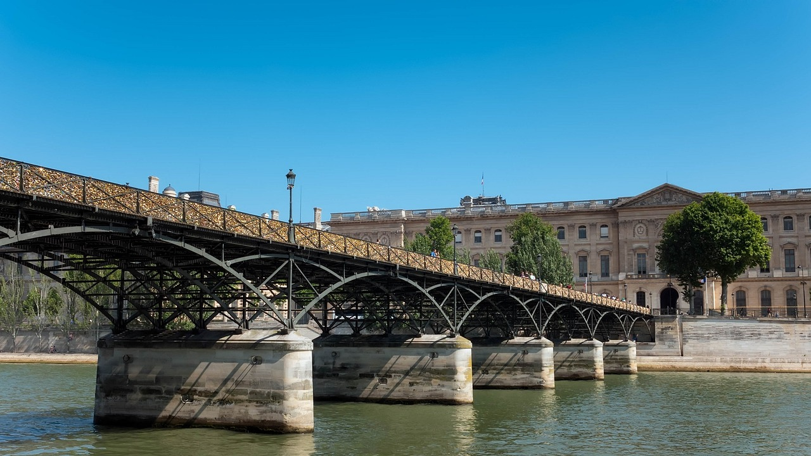

Vue de l'Arc de Triomphe depuis le sol place de l´Étoile. Monument parmi les monuments… voilà, l'Arc de Triomphe de Paris, au bout des Champs-Élysées. S´y rendre est quelque chose d´extraordinaire, c´est l´instant de reconnaître qu´on est arrivé à Paris. La seule visite de la Place de l´Étoile est une pure merveille. Le panorama de cet énorme carrefour, la vue du célèbre axe, d´un côté le Petit Arc, de l´autre, si loin mais si proche le grand Arche de la Défense. C´est super.Continuer à lire
Ponts de Paris
Les nouveaux ponts de la Seine Au 17ème siècle, la circulation entre les deux rives de la capitale s’intensifie et il devient nécessaire de construire de nouveaux ponts pour désengorger le trafic. C’est alors que le Pont Neuf, le plus vieux pont de Paris, fut achevé en 1607, sous le règne d’Henri IV alors que sa première pierre fut posée par le roi Henri III en personne. Il doit son nom à la nouveauté que constituait à l'époque un pont sans aucune habitation et doté de trottoirs protégeant les piétons de la boue et de la circulation. Il est aussi le tout premier pont en pierre à traverser entièrement la Seine et à ne pas avoir été couvert. Continuer à lire
Le Palais Galliera
La musée de la mode est un endroit magnifique et je n’ai pas pu résister pour y shooter mes photos… Avant de devenir un musée de mode, le Palais Galliera fut construit par la Duchesse Galliera pour abriter sa collection d’œuvres d’art. Cependant elle finit par la léguer à la ville de Gênes en Italie, et le Palais devient un musée d’art industriel, puis de peinture. C’est en 1977 qu’il devient consacré à la mode. Continuer à lire
Musée d'Orsay
Le musée d'Orsay. Quelle transformation extraordinaire d'une gare en un si beau musée! Le musée d'Orsay n'est pas chargé d'histoire comme le musée du Louvre ancienne forteresse médiévale devenue résidence royale depuis François 1er jusqu'en 1793. C'est dans l'ancienne gare d'Orsay que fut inauguré le musée d'Orsay en 1986 par le Président de la République Valéry Giscard d'Estaing. La magnifique verrière avec ses arches métalliques et la grande horloge de l'ancienne gare ont été conservées dans le musée,Continuer à lire